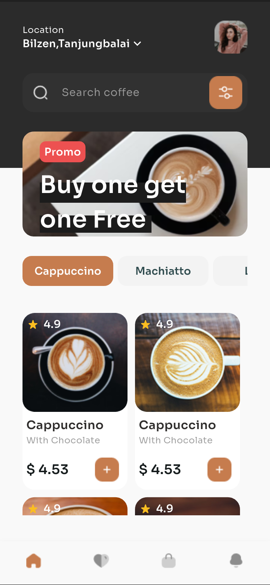
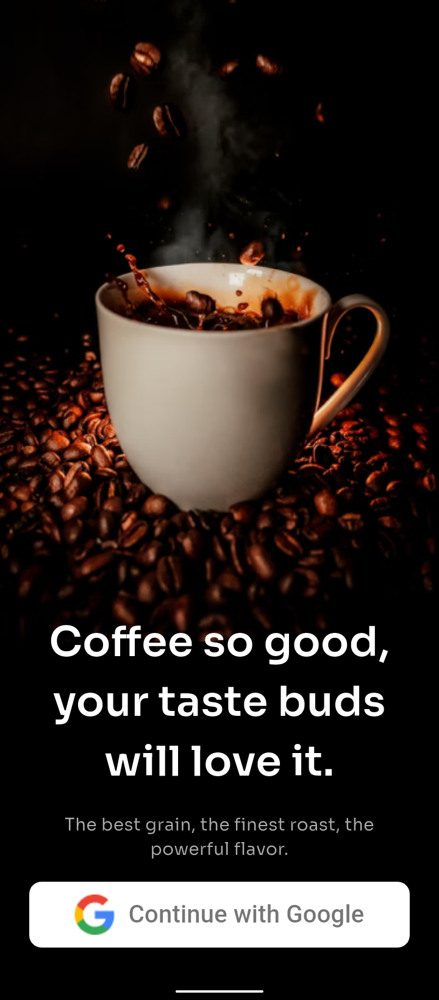

About the project
The app takes customers from browsing coffee through product details and order tracking.



A coffee ordering experience with Firebase-backed authentication, favorites, and a persistent cart.
The app takes customers from browsing coffee through product details and order tracking.
From browsing coffee to placing and tracking an order.
